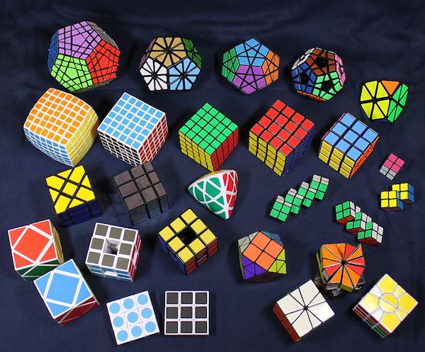

A combination puzzle is solved by achieving a particular combination starting from a random (scrambled) combination. Often, the solution is required to be some recognisable pattern such as "all like colours together" or "all numbers in order". The most famous of these puzzles is the original Rubik's Cube, a cubic puzzle in which each of the six faces can be independently rotated. Each of the six faces is a different colour, but each of the nine pieces on a face is identical in colour, in the solved condition. In the unsolved condition colours are distributed amongst the pieces of the cube. Puzzles like the Rubik's Cube which are manipulated by rotating a section of pieces are popularly called twisty puzzles. They are often face-turning, but commonly exist in corner-turning and edge-turning varieties. 